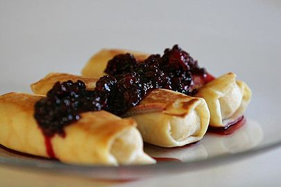
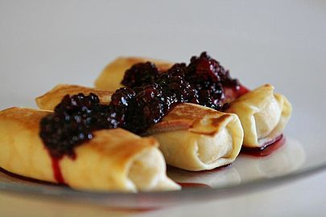

Українська кухня — традиційна кухня українського народу, з характерним стилем приготування їжі, пов'язаним з українською культурою. Українська кухня складалася багато століть. На всій території сучасної України вона залишається досить однорідною як за набором продуктів, що застосовується, так і за способами їх переробки. Деякі її страви набули широкого поширення серед інших народів, особливо слов'янських, як східних, так і західних.
Українська кухня створювалась протягом багатьох віків, тому вона певною мірою відбиває не тільки історичний розвиток українського народу, його звичаї і смаки, а й соціальні умови, природні та кліматичні особливості, в яких перебував український народ в ході свого історичного розвитку. Уже в часи трипільської культури (5-6 тисяч років тому), яку сприйняли східні слов'яни, населення Правобережної України вирощувало зернові культури — пшеницю, ячмінь і просо. На теренах стародавньої та середньовічної Європи існували два способи харчування, які визначили подальшу історію повсякденного життя європейців: для греків і римлян був притаманний рослинний спосіб харчування (пшениця, оливки, виноград), а так звані варвари віддавали перевагу м'ясній моделі (дичина, м'ясо свиней з лісових випасів, воловина, риба), тобто існувало протиставлення двох типів господарств: обробки земель під землеробство і привласнення «дарів» дикої, неосвоєної, первісної природи. Як хліборобство для римлян є ознакою вищої культури виробництва продуктів харчування, так м'ясо для північної Європи визначається в культурі як головна цінність. Протистояння й пізніший взаємовплив цих двох способів харчування, створили передумови для розвитку європейської народної кулінарії. Джерела часів давньої Русі, вказують на значно менше протиборство хлібного та м'ясного досвіду харчування на теренах України. Через Візантію сюди швидко та безболісно проник греко-римський зразок харчування, чому сприяли також родючі ґрунти, близькість та погодні умови стародавньої України. Водночас її природні запаси були багаті на дикоростучі рослини, дичину та рибу, що аж до XVIII століття становило вагому частку місцевого харчування. До XIX століття луки й ліси використовувалися для випасу свиней, великої та дрібної рогатої худоби, яка так само була суттєвою складовою харчування.

 

Можна припустити, що на українських землях здавна, ще із середніх віків і до Нового часу, мирно співіснували обидва європейські взірці харчування. У XVII—XIX століттях внаслідок соціально-економічних змін у середовищі українського селянства (приєднання України до Московського Царства, спричинило швидке закріпачення переважної його частини) і зміни структури природно-географічного середовища. Український спосіб харчування схиляється до переважання рослинної моделі й лише в новітні часи знову повертається до зрівноваженої рослинно-м'ясо-молочної. До XVII століття в Україні збереглися всі городні рослини, які вирощували у класичному середньовіччі: часник, цибуля, огірки, буряк, капуста, морква, ріпа, петрушка, селера, латук, пастернак, редька, салат, а з кінця XVIII ст. додалася картопля. Згадка про картоплю на Запоріжжі трапляється у XVIII ст., яку тут ще називали «земляними яблуками». У XIX столітті картопля дуже поширилася в Україні, її використовують для приготування перших та других страв й гарнірів до рибних та м'ясних страв. Цей овоч став в Україні «другим хлібом» і знайшов широке застосування — майже всі перші страви починають готуватися з картоплею, заміняючи нею звичну городину — пастернак, ріпу. Від часів пізнього Середньовіччя в українській кухні поступово оприявнилися два напрямки, поєднання яких у XVII—XVIII століттях витворило національну гастрономію, чітко усвідомлювану сучасниками. Одним із різновидів був «посполитий» — «селянська кухня», що часто ототожнюється з борщем, варениками і салом], ця кухня в Україні-Русі була спільною для селян, козаків, шляхти й священників, стіл яких хіба що вирізнявся заможністю.